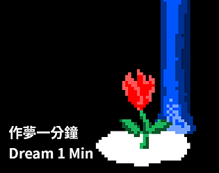
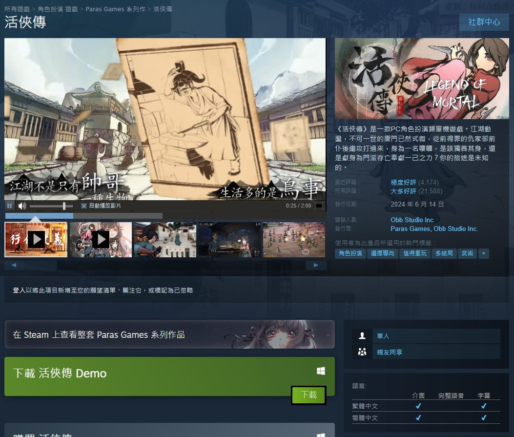

老翰的遊戲筆記
建立日期：2024-07-27
最後更新：2024-07-27

雖然已經沒有想要、或者說沒有辦法繼續在遊戲產業工作，但是對於自己有興趣或者關注的遊戲稍微寫點筆記還是不錯的。
活俠傳
2024/07/27 截圖
除了驚人的銷量與話題性之外，我覺得《活俠傳》與過去五六年我接觸的獨立遊戲開發者很不一樣的是，他們從一開始就只做中文（右下角的語系只有繁體中文跟簡體中文）。大部分台灣的開發者，對獨立遊戲市場的想像都是歐美市場。這是一個很有趣的差異。
我個人後來沒有很喜歡武俠題材的遊戲，所以對這部完全看走眼。但看一些網友分享的截圖，在內容上這部似乎真的下足功夫，我即使只是看截圖都覺得很有趣。
好像有一系列訪談還沒出完，慢慢等待訪談連載。
小結
先這樣做一頁，筆記多一點之後，再來分頁整理吧。
本來想寫「獨立遊戲」為主，但想想，我已經不再是以獨立遊戲為方向的人了，而且最近大部分的時間都在打《快打旋風6》，也許就放寬到「電子遊戲」、「寫自己玩的電子遊戲心得」就好。
#遊戲筆記